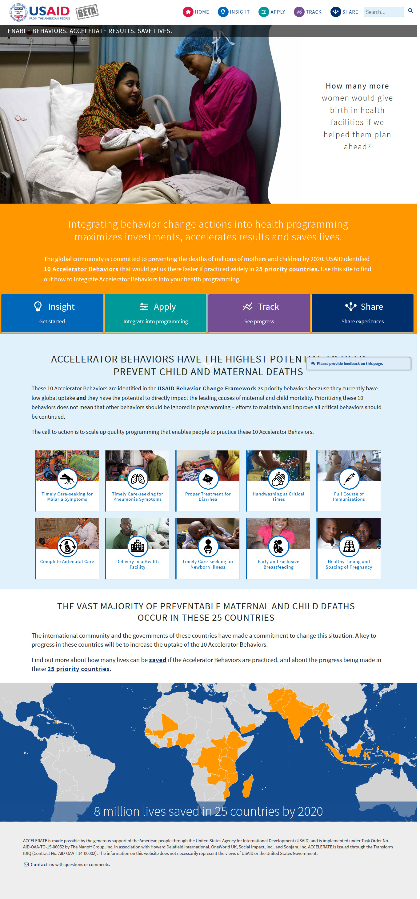
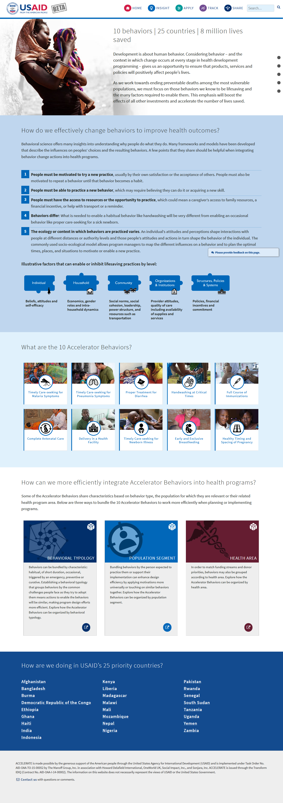
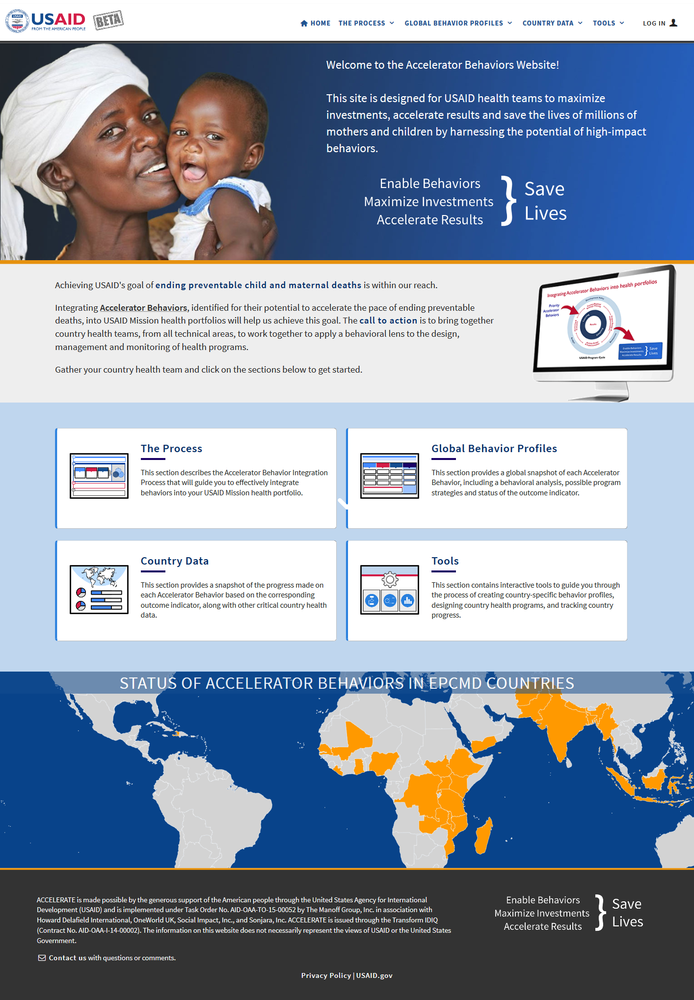
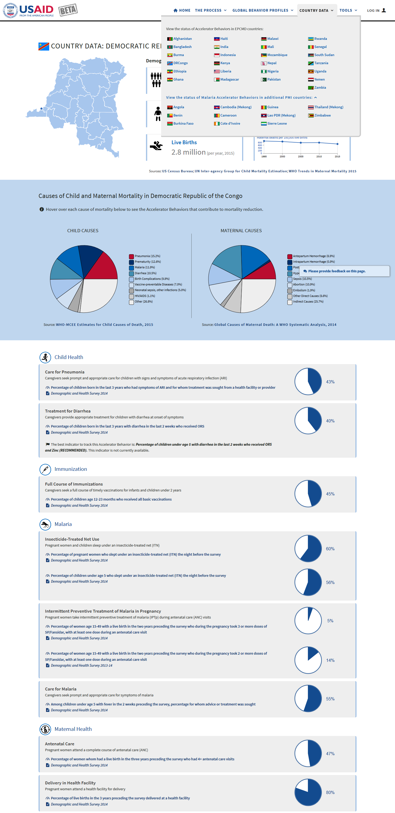

margiej12@gmail.com
margiej12@gmail.com
 202.251.0009
202.251.0009
THE VISION
Background: USAID's Social Behavior Change (SBC) team issued TRANSFORM, a 5-year (2014–2019), multiple-award indefinite delivery/indefinite quantity (IDIQ) contract, to infuse innovative practices from a range of disciplines into USAID-supported social and behavior change activities in maternal and child health, nutrition, tuberculosis, infectious diseases, and HIV and AIDS.
The ACCELERATE project was awarded under this IDIQ to a consortium of small businesses, led by the Manoff Group. The ACCELERATE project was to work specifically with the SBC team in Washington DC and with USAID Missions in 25 priority countries with the overarching vision to move from an intervention-driven approach to behavior-centered approach. For example, if USAID wanted to reduce the number of mothers and children dying from malaria, an "intervention" may be to distribute millions of insecticide-treated bed nets and measure impact by tracking the number of bed nets delivered. A "behavior-centered approach" analyzes factors preventing or helping households receive bed nets, and also properly hang, use and maintain the nets. The impact would be measured by changes in life-saving behaviors. This a paradigm shift in how programs can be designed, implemented and measured.
Sonjara, Inc. as the technology partner was contracted to work with the Manoff Group and partners to build a website and set of tools that helped facilitate this change.
ANALYSIS & RESEARCH:
Defining the Problem: Research and mission visits were conducted by the behavior change team in Kenya, Democratic Republic of the Congo, Ghana, and Senegal. There were different levels of understanding about Behavior Change theory and how it could impact design and implementation. Although many missions were collecting data, very few "behavioral" indicators were being tracked.
Audience Analysis - User Personas: The use of personas is to understand the tasks, behaviors, and attitudes of your users.
USAID Program Officer at Mission (U.S. citizen)
Key Goal:Do they have a specific task to complete quickly?
Do they want to take their time and enjoy the experience?
What do they need to know?
What is their ultimate goal?
Behavior:
What are their motivations for using the system?
What are they likely to be feeling when they use the system? (Do they assume it’s going to be a frustrating experience?)
Do they have a lot of spare time to perform their tasks?
What influences their choices?
What puts them off or makes them lose trust?
We Must
We Never
The Ideation Process: The team worked with the SBC team as well as PMI team to create several versions of the behavior integration process and the analysis of behaviors. My role was to help visualize the process in schematics that could be more easily conveyed to USAID missions around the world.
ITERATIVE DESIGN
Prototyping: Our team provide several versions of the website that were tested with users. I conducted user research in the DRC and Ghana.
Version 1.0: The first iteration fo the web application focused on learning and insight into 10 "Accelerator Behaviors" that had the most potential to reduce the number of women and children dying from preventable causes. I worked with the team to create a workplan, gather user requirements, develop personas, and create the visual design. I coded the prototype in HTML/CSS using our Content Management system. I worked with software developers to develop country profiles and data visualizations. I traveled with the team to Democratic Republic of the Congo (DRC) to conduct user testing of the concept and website.
Version 1.0: Home

Version 1.0: Insight

Version 1.0: Country Profile Data

Version 2.0: Based on user testing in the DRC and with USAID Washington Malaria team, as well as further developing the "Behavior Integration" process and the concept of Behavior Profiles, we made several changes to the site. We changed the color palette to work with USAID branding requirements. We moved away from 10 Accelerator Behaviors to 18 behaviors and related those behaviors to the causes of mortality. We also began developing the following complex tools: Prioritizing Behaviors, Analyzing Behaviors and Summarizing Behaviors to help USAID build Strategy, CDCS and SOW for implementing partners.
Version 2.0: Home

Version 2.0: Global Behavior Profiles

Version 1.0: Country Profile Data

Version 3.0: Home

Version 3.0: Global Behavior Profiles

Version 3.0: Country Profile Data

DEVELOPING THE APPLICATION AND TOOLSETS
The THINK BIG tools include:
1. Establishing a List of Priority Behaviors: This tool helps USAID Missions prioritize a set of 6-8 life-saving behaviors that are appropriate for their country’s context. The behaviors should be tied to the USAID Mission’s development objective, their overarching health goal and be identified as most proximal to addressing the causes of mortality. The tool helps USAID staff examine causes of mortality and guides them to consider organization issues, stakeholder concerns, and funding streams.
2. Analyzing each Priority Behavior by developing a Behavior Profile:
With a list of priority behaviors, USAID Missions can now analyze each behavior by selecting critical factors, both motivators and barriers, that help or hinder the adoption of the behavior. Then they identify the people needed to address those factors and finally they formulate program strategies that can help overcome or leverage the factors. This analysis facilitates a paradigm shift for many USAID Missions who often take an intervention-based approach to changing outcomes. They are now using a human-centered approach that looks at the realities of what influences people’s choices to make healthy and often live-saving decisions. The pathway to the behavior-centered program strategies flow back to addressing the causes of mortality and ultimately the Missions larger development objectives.
3. Summarizing and Synthesizing Behavior Profiles:
The last and most complicated tool, helps USAID Missions summarize the set of behaviors by looking at commonalities across factors, supporting actors and strategies. USAID Missions can use the tool to bundle behaviors into categories that could maximize their resources and help coordinate implementing partners working across their portfolio. Bundles may include, “Home-based Healthy Practices,” or “Facility-based Healthy Practices,” or “Utilization of Routine Services.” In most scenarios, 8 Behavior Profiles will generate 24 -30 Factors, Supporting Actors and Strategies. Therefore, once it is organized in a bundle, the tool uses a machine learning algorithm to categorize each factor, supporting actor and strategy across the profiles and by bundle. USAID Program officers can the examine each bundle with factors grouped by the tool and rewrite the categories that align with a results framework. They can also look at these across bundles.
IMPLEMENTATION
Testing
Beta Launch
EVALUATION
Testing